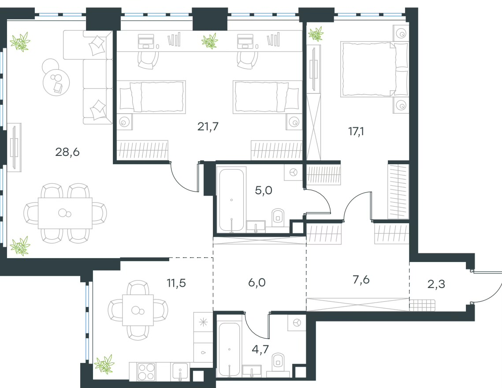

Квартира 104,5 м²
Полностью новая сетка перегородок для семьи из четырёх человек. Две отдельные детские от 13 м², спальня родителей от 17 м² и кухня-гостиная от 19 м². Предлагаются два варианта с разным расположением спальни родителей. Фасад, бетонные пилоны, шахты, два санузла и точка кухонной мойки сохранены. Левая детская около 13,1 м² почти без запаса к минимуму: размер и перегородки 8 см нужно подтвердить обмером. На этом этапе — планы с мебелью, размерами и проверкой проходов.
Страницы застройщика
Варианты
Чем варианты отличаются
| Вариант 1 детские рядом | Вариант 2 детские по краям | |
|---|---|---|
| Рекомендация | Начать с этого: близкие по площади детские | Если важнее большая общая зона и детские по разным сторонам |
| Детская 1 / минимум 13 м² | ≈ 13,1 м² | ≈ 13,1 м² |
| Детская 2 / минимум 13 м² | ≈ 13,4 м² | ≈ 17,4 м² |
| Родители / минимум 17 м² | ≈ 22,8 м² | ≈ 21,3 м² |
| Кухня-гостиная / минимум 19 м² | ≈ 25,0 м² без холла | ≈ 27,7 м² без холла |
| Шкафы глубиной 60 см | 11,90 пог. м | 10,17 пог. м |
| Выходы из спален | детские в общую зону, родители в холл | родители и детская 1 в общую зону, детская 2 в холл |
| Кухня и санузлы | мойка в прежней точке, два своих стояка | без изменений относительно варианта 1 |
| Основной компромисс | общая зона Г-образная, детская 2 узкая | детские различаются на ≈ 4,3 м² |
План застройщика
Источник — приложенный скриншот 1139×881 и официальный SVG застройщика, полученный 21.11.2026. Линейных размеров в них нет. Принят равномерный масштаб 1,28 см/пиксель, начало внутреннего контура на скриншоте (15, 45). Проверка по площади исходной комнаты 21,7 м² даёт около 21,8 м². Другие исходные помещения сходятся примерно в пределах 3 %. Толстые бетонные элементы сохранены, тонкие перегородки считаются отсутствующими по заданию. Точность обмера не заявляется: запас 10–20 см может исчезнуть после уточнения геометрии.


| Помещение | На плане, м² | Размер, см | По размерам, м² |
|---|---|---|---|
| Исходная общая комната | 28,6 | ≈ 309×691 + открытая часть | ≈ 28,7 |
| Исходная центральная комната | 21,7 | ≈ 540×410 без пилонов | ≈ 21,8 |
| Исходная правая комната | 17,1 | ≈ 301×580 без пилона | ≈ 17,4 |
| Исходная кухня | 11,5 | ≈ 349×343 без выступов | ≈ 11,5 |
| Санузел 1 | 5,0 | ≈ 250×201 без угла | ≈ 4,9 |
| Санузел 2 | 4,7 | ≈ 260×186 без угла | ≈ 4,7 |
| Прихожая + холлы | 6,0 + 7,6 + 2,3 | контуры по исходной схеме | не использованы для калибровки |